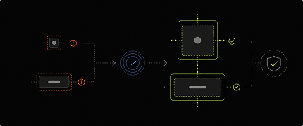

A Figma plugin that validates touch targets and interaction affordances before developer handoff.
Interactive components often appear visually correct while failing usability and accessibility standards due to:
These issues are difficult to catch manually across large design systems and product flows.
Scans selected frames and components to identify layers that fail recommended touch target and interaction standards.
The plugin highlights problematic areas and suggests actionable fixes directly inside Figma.
Validation workflows that help teams create interfaces that are:
The plugin surfaces actionable fixes for improving touch targets and interaction usability.
Improves interaction quality before implementation by catching usability and accessibility issues early in the workflow.